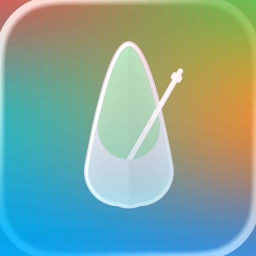
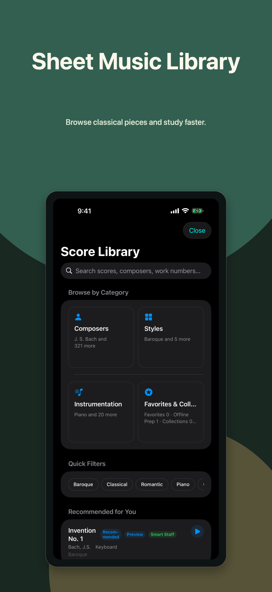
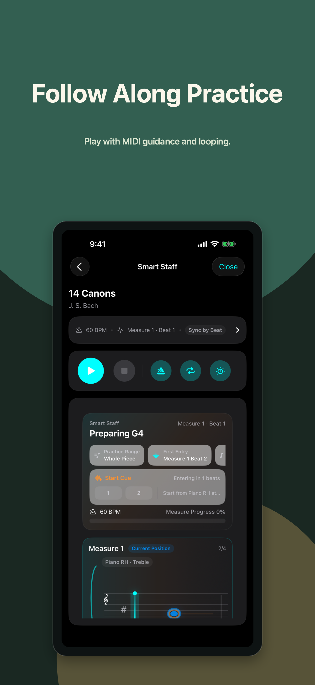
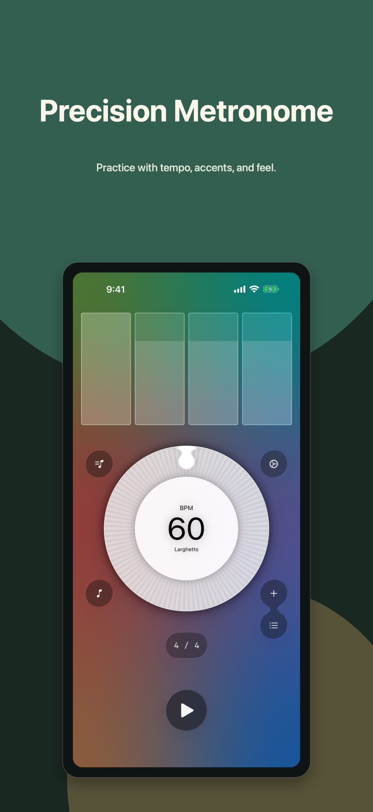
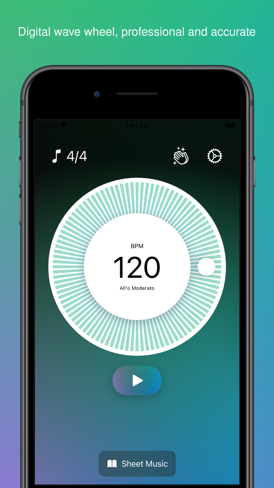
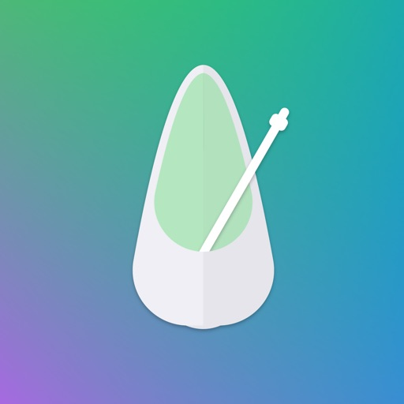
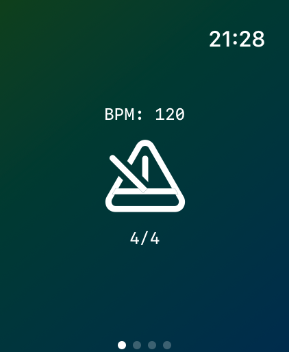
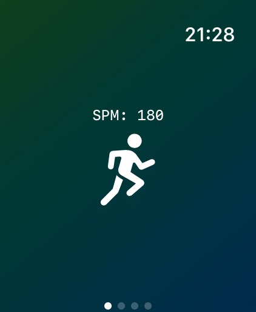
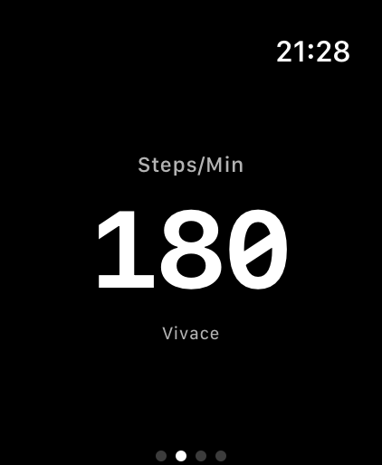
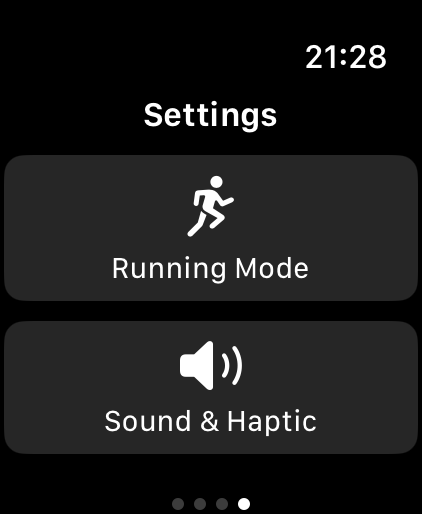

Fine control for slow repetition, tempo ramps, and high-speed rhythm work.
Metronome for Apple devices
Keep time. Shape practice. Stay in flow.
Metronome26 and Metronome Pro turn the simple click into a focused practice system for rhythm training, sheet music, Live Activity, and Apple Watch.
Two apps, one practice core
A precise metronome for daily players, teachers, and students.
Use more expressive click colors and beat accents than a traditional hardware metronome.
Practice from iPhone, iPad, Mac, Live Activity, Dynamic Island, and Apple Watch where supported.

Metronome26: Practice Beats
The forward-looking practice app.
Metronome26 keeps core metronome controls accessible while adding richer practice workflows: sheet music browsing, PDF and MIDI resources, imported MIDI practice, loop syncing, and bar/beat/subdivision-aware repetition.
- Free download with professional metronome controls.
- Sheet Music Library subscriptions for advanced practice value.
- Built for modern iOS, Live Activity, Dynamic Island, and localized global growth.





Metronome - Metronome Pro
The paid classic, rebuilt for 2.x.
Metronome Pro 2.x brings the modern practice core into the paid app: redesigned iPhone screens, sheet music and MIDI practice, SoundFont sounds, records, and a rebuilt Apple Watch companion.
- Upcoming 2.x screenshots and copy reflect the next release.
- Paid download, no ads, with pro practice controls.
- Apple Watch adds dedicated Metronome and Running modes.
Metronome Pro Watch
For wrists, workouts, and practice rooms.
Pro Watch now has two focused modes: a musician-first metronome for practice and a running cadence mode for fitness users who buy Pro to keep their stride steady without staring at a phone.




Set BPM, keep a clear beat display on the wrist, and use sound or haptics when the phone is not in reach.
Dial in steps per minute for cadence training, then let the watch pace the workout with wrist-first feedback.
Choose the right version
Metronome26 is for the next practice system. Pro is the compact classic.
Capability
Metronome26
Metronome Pro
Best for
Modern practice, sheet music, MIDI, subscriptions
Paid 2.x practice app with Watch metronome and running modes
Pricing model
Free core app, optional Sheet Music Library subscription
Paid App Store download
Core metronome
Precise BPM, time signatures, accents, records
Modern BPM, time signatures, SoundFont sounds, records, Watch haptics
Advanced practice
Sheet music, PDF/MIDI resources, imported MIDI loops
2.x sheet music, MIDI follow-along, and Watch running cadence
Platform focus
iOS 26 and newer devices
iPhone, iPad, Mac, and Apple Watch
Tempo that behaves
Set precise BPM, switch time signatures, emphasize accents, and save practice states that match real rehearsal habits.
Practice beyond the click
Use sheet music and MIDI workflows when repetition needs measure-aware loops instead of a generic timer.
On-screen and on-wrist
Keep time visible through Live Activity and Apple Watch paths, including Pro Watch running cadence for workout pacing.
Download